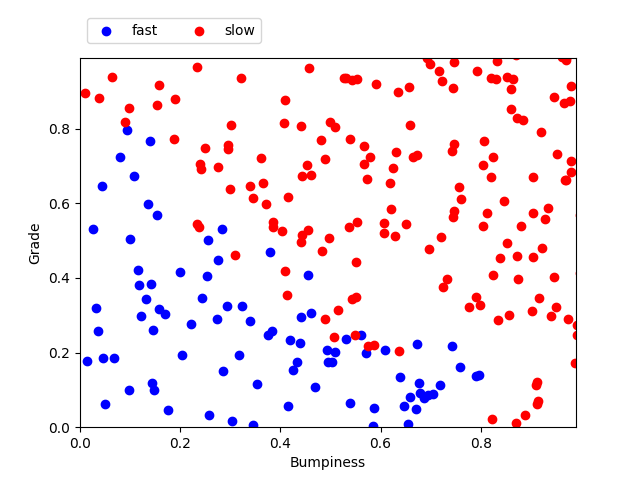
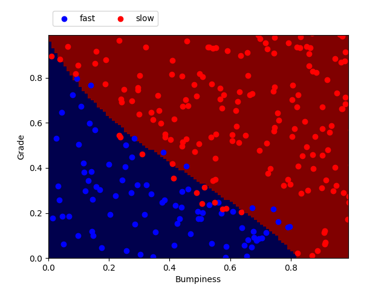

Support Vector Machine
Support vector machine for self-driving car
We want to train a car to decide weither or not it can drive faster or if it should slow down depending on the terrain. Two features will be taken into account in this project :
- Bumpiness: the more bumps on the road, the slower the car should go.
- Steepness: the steeper the road, the slower the car should go.
I will describe the procedure I went through step by step using Support Vector Machine (SVM) as classifiers.
-
We first need to create a dataset of terrain with the features bumpiness and steepness along with a label "fast" or "slow". From this labeled dataset, we will be able to build a decision tree to help the car make it's decision : "Should I go slow or fast?"
### Modified from: Udacity - Intro to Machine Learning import random def makeTerrainData(n_points): random.seed(42) ### generate random data for both features 'grade' and 'bumpy' with an error grade = [random.random() for ii in range(0,n_points)] bumpy = [random.random() for ii in range(0,n_points)] error = [random.random() for ii in range(0,n_points)] ### data are labeled depending on their features and error. ### label "slow" if labels = 1.0 ### label "fast" if labels = 0.0 labels = [round(grade[ii]*bumpy[ii]+0.3+0.1*error[ii]) for ii in range(0,n_points)] ### adjust labels for extreme cases (>0.8) of bumpiness or steepness for ii in range(0, len(y)): if grade[ii]>0.8 or bumpy[ii]>0.8: labels[ii] = 1.0 ### split into train set (75% of data generated) and test sets (25% of data generated) features = [[gg, ss] for gg, ss in zip(grade, bumpy)] split = int(0.75*n_points) features_train = features[0:split] features_test = features[split:] labels_train = labels[0:split] labels_test = labels[split:] return features_train, labels_train, features_test, labels_testThe outputs are as follows for n_points = 10 :
features_train labels_train features_test labels_test grade bumpiness slow = 1.0 | fast = 0.0 grade bumpiness slow = 1.0 | fast = 0.0 0.64 0.22 1.0 0.09 0.59 0.0 0.03 0.51 0.0 0.42 0.81 1.0 0.28 0.03 0.0 0.03 0.01 0.0 0.22 0.20 0.0 0.74 0.64 1.0 0.68 0.54 1.0 0.89 0.22 1.0 For n_points = 1000, we get the following repartition of test points. We consider the feature 'bumpiness' on the x-axis and 'grade' on the y axis. Each feature in a gradient between 0 and 1. Each point previously generated has two coordinates bumpiness and grade. When we plot the test points (features_test) - representing 25% of our generated data - we can see the pattern separating the points labeled 'slow' and 'fast'.
Testing set plotted with their labels
Testing set includes all features_test (grade, bumpiness) with their labels_test (slow or fast)
-
Now with our training set (features_train), we can train our classifier to predict a point's label depending on its features.
We will use the
class sklearn.svm.SVC(). It can take several parameters, but we will only focus on
C,
kernel and
gamma.
C: (Default = 1.0) Controls the tradeoff between smooth decision boundary and classifying training points correctly. A large value of C will allow to include more training points therefore leading to a more intricate boundary. Here in the scheme the orange line represents a low value of C and the green line represents a high value of C (more on Udacity).
Kernel: (default = 'rbf') Can be ‘linear, ‘poly’, ‘rbf’, ‘sigmoid’, ‘precomputed’ or a callable. It's a function that takes a low dimensional input space or feature space and map it to a higher dimensional space. Therefore something that is not linearly separable can be turned into a separable problem (more on Udacity).
 gamma: (Default = auto) Defines how far the influence of a single training example reaches. A High gamma value means only the closest points to the decision boundary will carry the weigth leading to a smoother boundary. One the other hand a low gamma value means even the points far away from the decision boundary have a weigth leading to a more wiggly boundary (more on Udacity).
gamma: (Default = auto) Defines how far the influence of a single training example reaches. A High gamma value means only the closest points to the decision boundary will carry the weigth leading to a smoother boundary. One the other hand a low gamma value means even the points far away from the decision boundary have a weigth leading to a more wiggly boundary (more on Udacity).
from prep_terrain_data import makeTerrainData from sklearn.svm import SVC from sklearn.metrics import accuracy_score ### generate the dataset for 1000 points (see previous code) features_train, labels_train, features_test, labels_test = makeTerrainData(1000) ### create the classifier clf = SVC(kernel='rbf', C=10000.0) ### fit the training set clf.fit(features_train, labels_train) ### now let's make predictions on the test set prediction = clf.predict(features_test) ### measure of the accuracy score by comparing the prediction with the actual labels of the testing set accuracy = accuracy_score(labels_test, pred) -
Here I plotted the points from the testing set (features_test) with their labels (labels_test). On top is the prediction made by the classifier after fitting on the training set. We can play with the previously cited features to find the best accuracy.
Kernel and gamma
SVM with kernel = 'linear'
C = 1, gamma = 1
SVM with kernel = 'rbf'
C = 1, gamma = 1

SVM with kernel = 'poly'
C = 1, gamma = 1
SVM with kernel = 'sigmoid'
C = 1, gamma = 1
Kernel
gamma = 1
C = 1
Training time (sec) Predict time (sec) Accuracy linear 0.004 0.001 0.920 rbf 0.008 0.002 0.916 poly 0.004 0.001 0.920 sigmoid 0.012 0.003 0.900 
SVM with kernel = 'linear'
C = 1, gamma = 1000
SVM with kernel = 'rbf'
C = 1, gamma = 1000
SVM with kernel = 'poly'
C = 1, gamma = 1000

SVM with kernel = 'sigmoid'
C = 1, gamma = 1000
Kernel
gamma = 1000
C = 1
Training time (sec) Predict time (sec) Accuracy linear 0.004 0.001 0.920 rbf 0.044 0.006 0.924 poly 61.041 0.001 0.912 sigmoid 0.008 0.002 0.664 The C parameter
SVM with C = 1
kernel = 'rbf', gamma = default
SVM with C = 1 000
kernel = 'rbf', gamma = default
SVM with C = 10 000
kernel = 'rbf', gamma = default
SVM with C = 1 000 000
kernel = 'rbf', gamma = default
C
gamma = default
Kernel = 'rbf'
Training time (sec) Predict time (sec) Accuracy 1 0.009 0.002 0.920 100 0.010 0.001 0.916 1 000 0.012 0.001 0.924 10 000 0.021 0.001 0.932 100 000 0.132 0.001 0.944 1 000 000 1.473 0.001 0.948